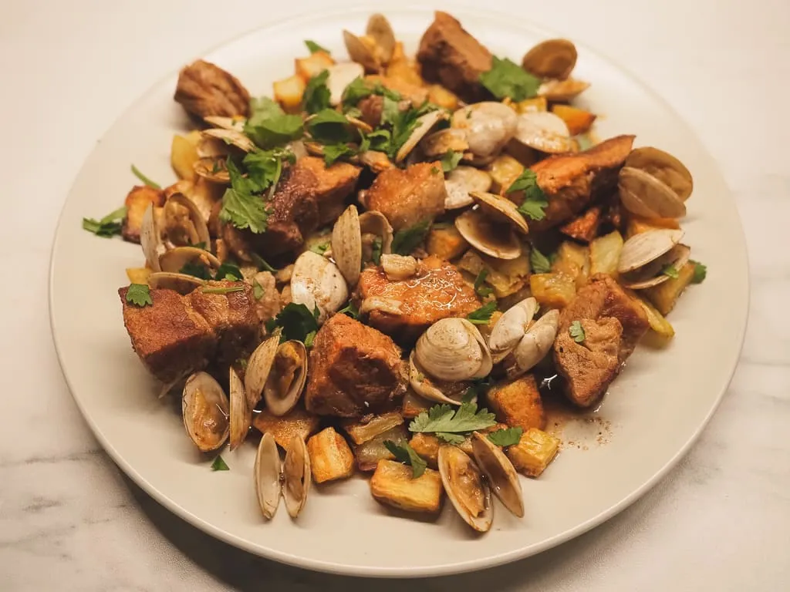

Pork and Clams

Intriguing and unusual for lots of cuisines, this is a dish that combines seafood and pork perfectly.
Ingredients
- 500g pork loin (with some fat but not much)
- 2 garlic cloves – crushed
- 400ml of a good white wine
- Salt and black pepper to taste